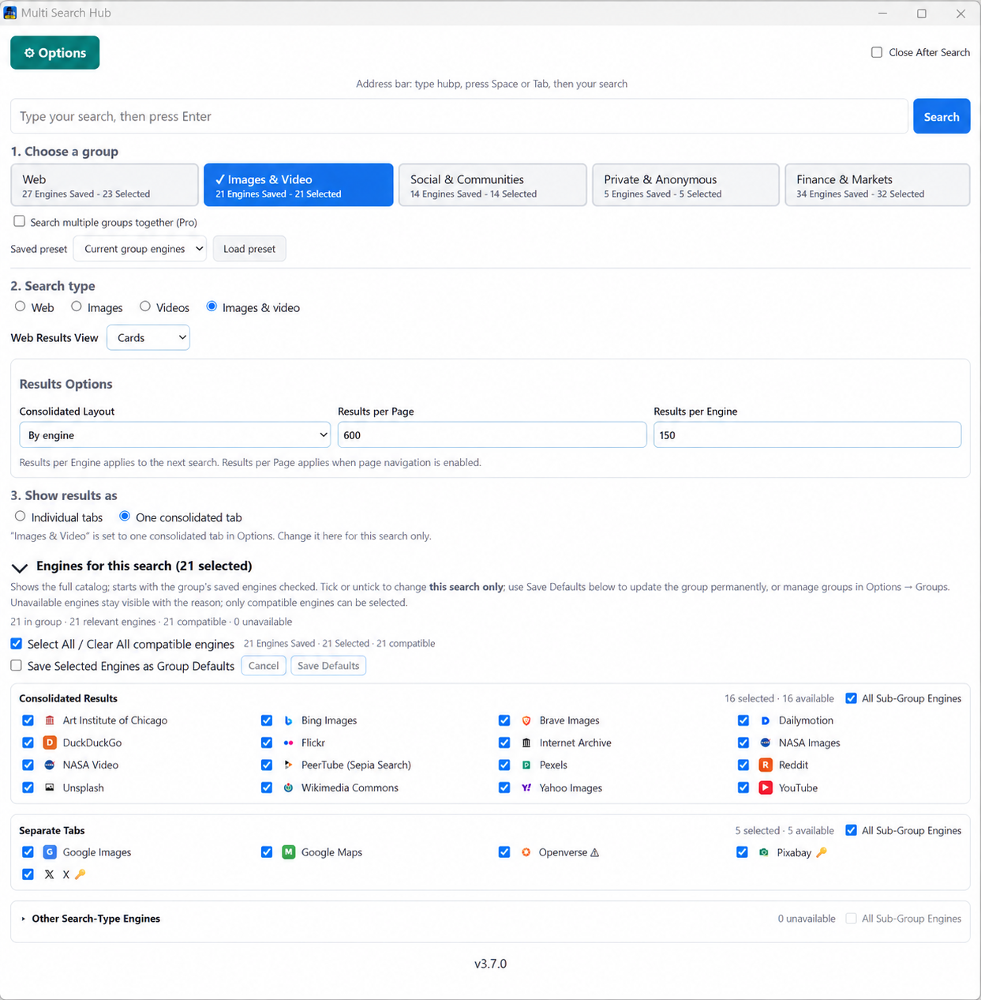
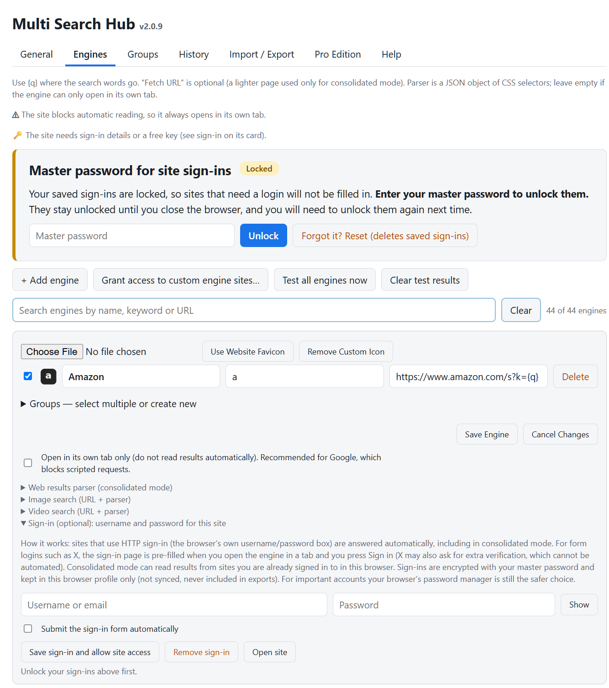
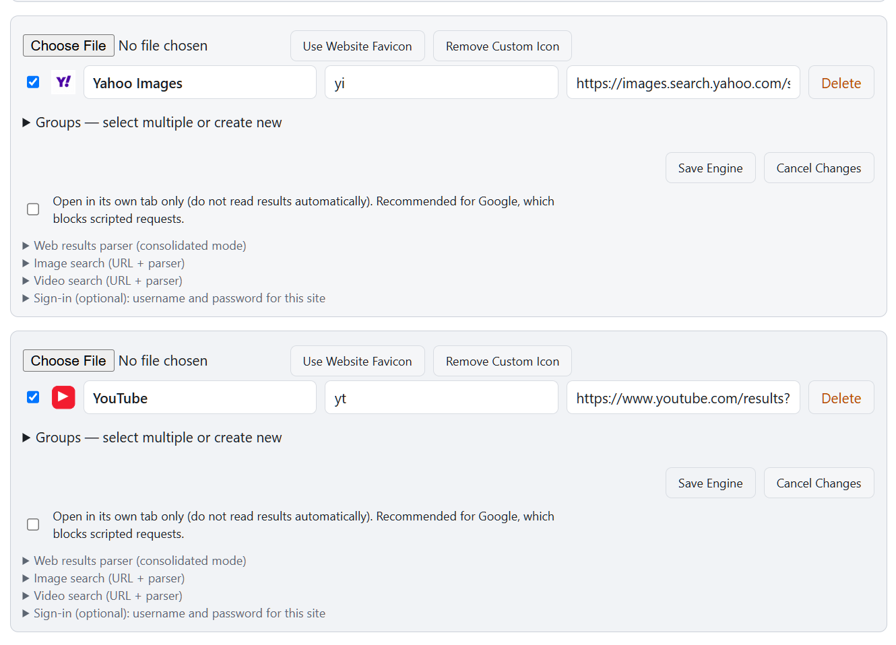
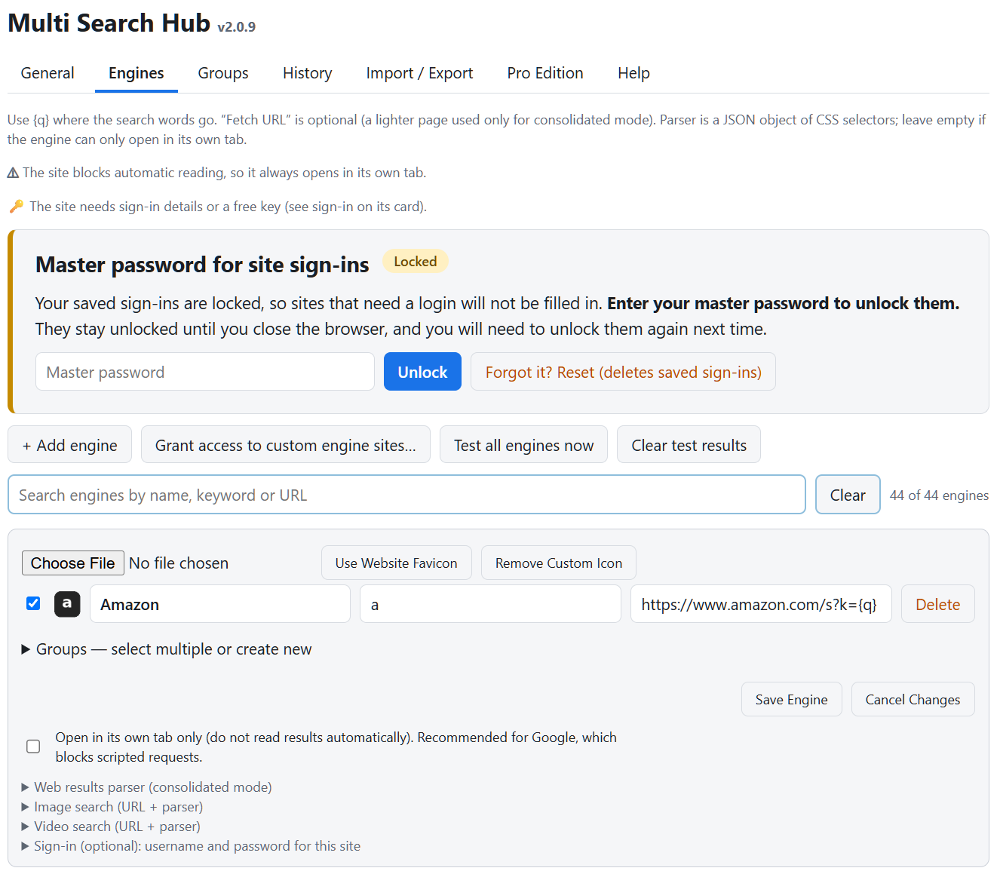
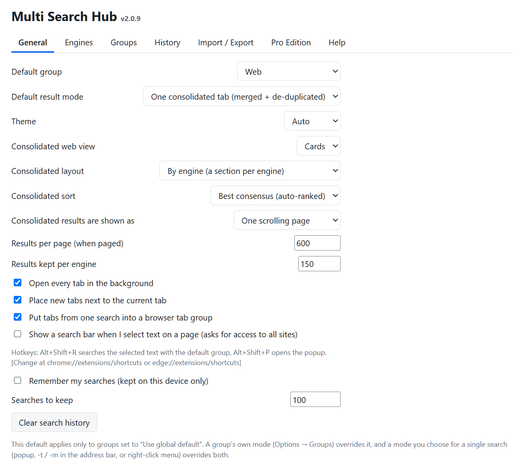
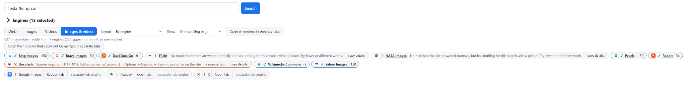
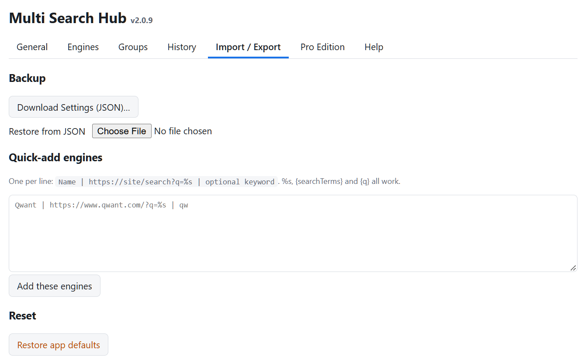

Choose result modes
The extension sends a search phrase to each selected engine. In Individual tabs mode, each source opens independently. In Consolidated mode, supported readers collect results into a common result page. Some providers require separate tabs because they block automated retrieval or require authentication.


Understand groups and search types
The Web group is the entire search catalog. Specialty groups show only their relevant engines. Search type (Web, Images, Videos, Images & video) further filters compatibility in the SSW. A source may remain visible but unavailable for an incompatible type. The Groups tab defines defaults; changes made in the SSW apply only to the current search unless explicitly saved.



Configure an engine reader
In Options → Engines, open an engine card. Each engine can have a search URL and optional fetch URL. The Web results parser accepts selectors that help identify result links, titles and descriptions. Image and video search have their own URL/parser sections. Changes should be tested with common English search queries.
- Check the query substitution in the search URL (
{q}). - Expand the appropriate parser panel and inspect selectors.
- Save only after validating the URL and parser syntax.
- Test a search, examine engine-specific warnings, and compare results with the provider’s own website.
The available capture shows the parser headings collapsed, not the internal selector fields; descriptions above are conceptual and do not invent unseen field names.


Handle credentials safely
Site credentials are optional and should be entered only for a site you trust. The encrypted vault requires a master password to unlock for the current browser session. Do not confuse the vault password with a Pro license key; neither should be shared publicly. Where possible, use the browser’s password manager for important accounts.

Control layout and limits
Under General, select one scrolling page or paged results, set maximum results, choose Cards/List, and select engine-by-engine or merged display. With a merged view, the extension attempts to remove duplicate URLs and rank results using overlap across engines.


Safeguard configuration
Use Import / Export before substantial engine or group changes. Back up settings as JSON and keep the original file. Import only trusted backups. When changing unpacked builds, retain the same extension path and reload instead of uninstalling, where possible, to avoid changing extension identity and losing local state.

Diagnose missing results
If an engine reports a CAPTCHA, HTTP 401 or login requirement, or indicates that selectors found no matches, do not assume the underlying website has zero search results. Try opening the engine in its own tab and confirm search quality and language there. Update readers only when a tested selector or supported API is available.

Known v2.0.9 issues: Recently Deleted not showing after reported history deletions; SSW group cards missing recent-search display; Dark/Midnight theme readability; incomplete Free feature enforcement. These are maintenance issues, not features represented as working here.
Address bar and shortcuts
The extension manifest specifies hub as the omnibox keyword. After typing it and pressing Space or Tab, supported engine/group keywords can be used; the Help screenshot shows examples. Use Alt+Shift+P to open the popup and Alt+Shift+R for selected-text search. A stale hubp label in the current Help screenshot needs correction in a later build.